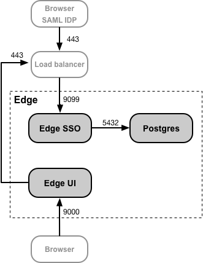

Configure apigee-sso for HTTPS access
Edge for Private Cloud v. 4.18.01
http://docs.apigee.com/node/37421 describes how to install and configure the Edge SSO module to use HTTP on port 9099, as specified by the following property in the config file:
SSO_TOMCAT_PROFILE=DEFAULT
Alternatively, you can set SSO_TOMCAT_PROFILE to one of the following values to enable HTTPS access:
- SSL_PROXY - Configures apigee-sso in proxy mode, meaning you have installed a load balancer in front of apigee-sso and terminated TLS on the load balancer. You then specify the port used on apigee-sso for requests from the load balancer.
- SSL_TERMINATION - Enabled TLS access to apigee-sso, the Edge SSO module, on the port of your choice. You must specify a keystore for this mode that contains a cert signed by a CA. You cannot use a self-signed cert.
You can choose to enable HTTPS at the time you initially install and configure apigee-sso, or you can enable it later.
Enabling HTTPS access to apigee-sso using either mode disables HTTP access. That is, you cannot access apigee-sso using both HTTP and HTTPS concurrently.
If you configure HTTPS access to apigee-sso, ensure that you update any URLs used by the Edge UI and by your IDP to to use HTTPS. Also, if you choose to enable HTTPS on a port other than 9099, make sure you update the UI and IDP to use the correct port number.
Enable SSL_PROXY mode
In SSL_PROXY mode, your system uses a load balancer in front of the Edge SSO module and terminates TLS on the load balancer. In the following figure, the load balancer terminates TLS on port 443, and then forwards requests to the Edge SSO module on port 9099:

In this configuration, you trust the connection from the load balancer to the Edge SSO module so there is no need to use TLS for that connection. However, external entities, such as the SAML IDP, now must access the Edge SSO module on port 443, not on the unprotected port of 9099.
The reason to configure the Edge SSO module in SSL_PROXY mode is that the Edge SSO module auto-generates redirect URLs used externally by the IDP as part of the authentication process. Therefore, these redirect URLs must contain the external port number on the load balancer, 443 in this example, and not the internal port on the Edge SSO module, 9099.
Note: You do not have to create a TLS cert and key for SSL_PROXY mode because the connection from the load balancer to the Edge SSO module uses HTTP.
To configure the Edge SSO module for SSL_PROXY mode:
- Add the following settings to your config file:
# Enable SSL_PROXY mode.
SSO_TOMCAT_PROFILE=SSL_PROXY
# Specify the apigee-sso port, typically between 1025 and 65535.
# Typically ports 1024 and below require root access by apigee-sso.
# The default is 9099.
SSO_TOMCAT_PORT=9099
# Specify the port number on the load balancer for terminating TLS.
# This port number is necessary for apigee-sso to auto-generate redirect URLs.
SSO_TOMCAT_PROXY_PORT=443
SSO_PUBLIC_URL_PORT=443
# Set public access scheme of apigee-sso to https.
SSO_PUBLIC_URL_SCHEME=https
- Configure the Edge SSO module:
> /opt/apigee/apigee-service/bin/apigee-service apigee-sso setup -f configFile
- Update your IDP configuration to now make an HTTPS request on port 443 of the load balancer to access Edge SSO. See http://docs.apigee.com/node/37416 for more.
- Update your Edge UI configuration for HTTPS by setting the following properties:
SSO_PUBLIC_URL_PORT=443
SSO_PUBLIC_URL_SCHEME=https
See http://docs.apigee.com/node/37431 for more.
- If you installed the Developer Services portal or API BaaS, update them to use HTTPS to access Ede SSO. For more, see:
Enable SSL_TERMINATION mode
For SSL_TERMINATION mode, you must:
- Generated a TLS cert and key and store them in a keystore file. You cannot use a self-signed certificate. You must generate a cert from a CA.
- Update the configuration settings for apigee-sso.
To create a keystore file from your cert and key:
- Create a directory for the JKS file:
> sudo mkdir -p /opt/apigee/customer/application/apigee-sso/tomcat-ssl/
- Change to the new directory:
> cd /opt/apigee/customer/application/apigee-sso/tomcat-ssl/
- Create a JKS file containing the cert and key. You must specify a keystore for this mode that contains a cert signed by a CA. You cannot use a self-signed cert. For an example of creating a JKS file, see http://docs.apigee.com/node/20491.
- Make the JKS file owned by the "apigee" user:
> sudo chown -R apigee:apigee /opt/apigee/customer/application/apigee-sso/tomcat-ssl
To configure the Edge SSO module:
- Add the following settings to your config file:
# Enable SSL_TERMINATION mode.
SSO_TOMCAT_PROFILE=SSL_TERMINATION
# Specify the path to the keystore file.
SSO_TOMCAT_KEYSTORE_FILEPATH=/opt/apigee/customer/application/apigee-sso/tomcat-ssl/keystore.jks
SSO_TOMCAT_KEYSTORE_ALIAS=sso
# The password specified when you created the keystore.
SSO_TOMCAT_KEYSTORE_PASSWORD=keystorePassword
# Specify the HTTPS port number between 1025 and 65535.
# Typically ports 1024 and below require root access by apigee-sso.
# The default is 9099.
SSO_TOMCAT_PORT=9443
SSO_PUBLIC_URL_PORT=9443
# Set public access scheme of apigee-sso to https.
SSO_PUBLIC_URL_SCHEME=https
- Configure the Edge SSO module:
> /opt/apigee/apigee-service/bin/apigee-service apigee-sso setup -f configFile
- Update your IDP configuration to now make an HTTPS request on port 9443 of the load balancer to access Edge SSO. See http://docs.apigee.com/node/37416 for more.
- Update your Edge UI configuration for HTTPS by setting the following properties:
SSO_PUBLIC_URL_PORT=9443
SSO_PUBLIC_URL_SCHEME=https
See http://docs.apigee.com/node/37431 for more.
- If you installed the Developer Services portal or API BaaS, update them to use HTTPS to access Ede SSO. For more, see:
Setting SSO_TOMCAT_PROXY_PORT when using SSL_TERMINATION mode
You might have a load balancer in front of the Edge SSO module that terminates TLS on the load balancer but also enable TLS between the load balancer and Edge SSO. In the figure above for SSL_PROXY mode, this means the connection from the load balancer to Edge SSO uses TLS.
In this scenario, you configure TLS on Edge SSO just as you did above for SSL_TERMINATION mode. However, if the load balancer uses a different TLS port number than Edge SSO uses for TLS, then you must also specify the SSO_TOMCAT_PROXY_PORT property in the config file. For example:
- The load balancer terminates TLS on port 443
- Edge SSO terminates TLS on port 9443
Make sure to include the following setting in the config file:
# Specify the port number on the load balancer for terminating TLS.
# This port number is necessary for apigee-sso to generate redirect URLs.
SSO_TOMCAT_PROXY_PORT=443
SSO_PUBLIC_URL_PORT=443
The configure the IDP and Edge UI to make HTTPS requests on port 443.